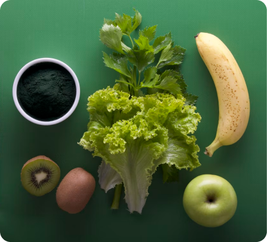
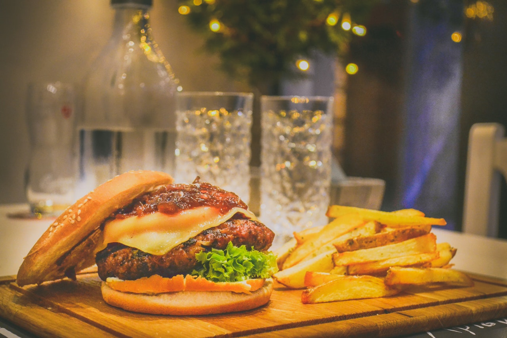
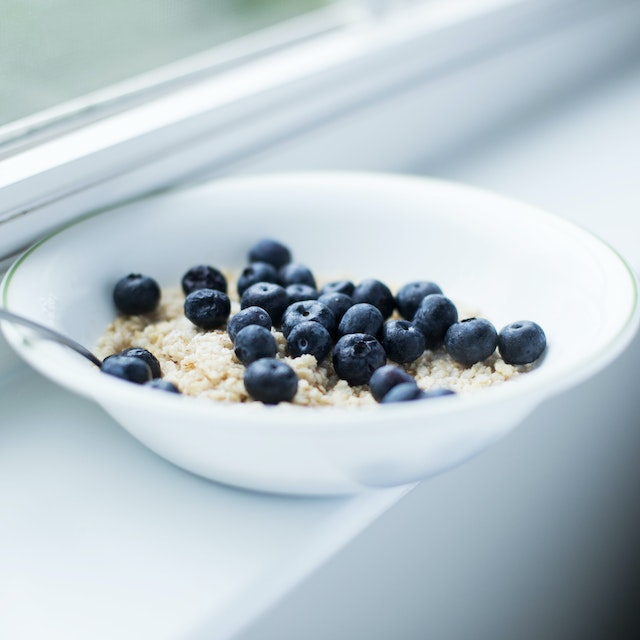

Calories
"You always fear what you don't understand"Understanding Calories
We should't be afraid of calories, instead we should understand that they are just an unit of mesaurement for energy.
How do we use calories?

Our bodies use the calories we get from food to fuel our basal metabolic rate, digestion, and physical activity. When the number of calories we consume matches the number of calories you burn, your weight will remain stable.
Weight lose - eat fewer calories than you burn Weight gain - eat more calories than you burnWith all of these in mind...
This is an estimate of your daily caloric intake based on the information from your profile :
